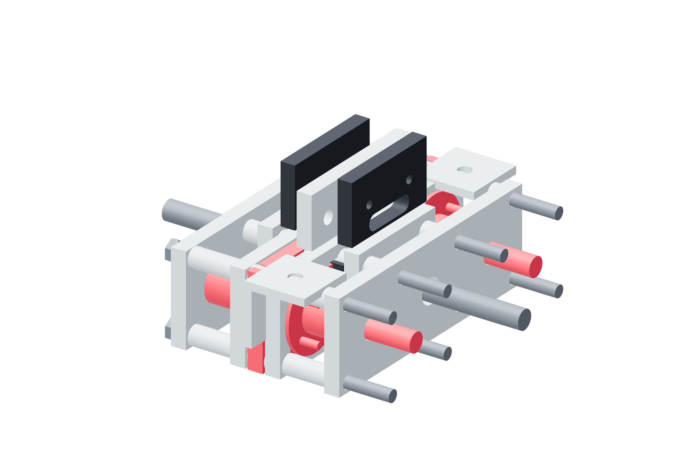

Screw drives / six force links58 / 179
Fit the guided spring shuttle
Bronze bushings guide the output. Opposed spring pairs respond to both load directions while the metal shoulders limit shuttle movement to ±1.0 mm.
AddPer link: shuttle / 2 bronze guides / 4 boss halves · 8 M3 × 30 · 2 M8 × 90 partly threaded grade8.8 · 4 springs / pressure washers
Tools / setup3 / 6 mm hex · wrenches · caliper

- Fit the bronze bushings to the shuttle. Close each pair of metal boss halves around its guide with four M3 × 30 bolts.
- Insert the smooth M8 guides, four metal pressure washers and four 20 mm springs in their paired CAD order.
- Install the end plates and metal spacers; bring directional spring preload to the governed measured setting.
- Fit both opposed overload NC switches. Move the shuttle in each direction by hand before fixing the output attachment.
Ready when
The shuttle moves freely in both directions, opens a distinct NC contact before each ±1.0 mm captured shoulder and cannot escape the metal cage. A binding bushing, spring bypass or switch after shoulder contact fails overload protection. Correct the guided metal path before force calibration.